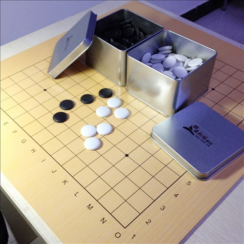
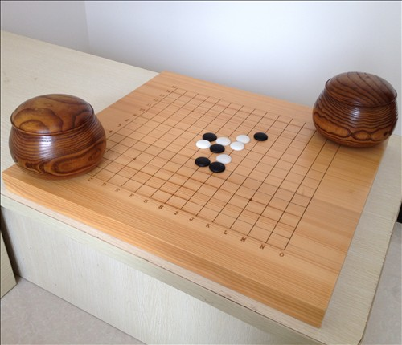
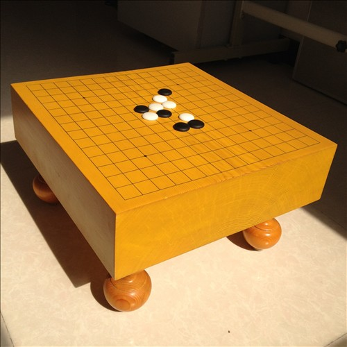
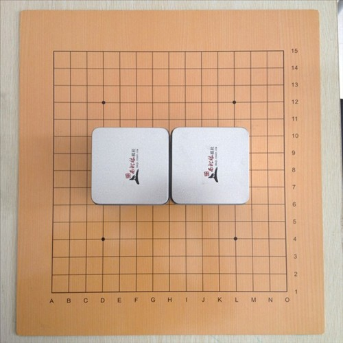
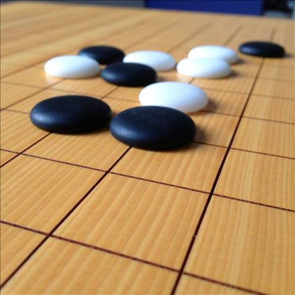
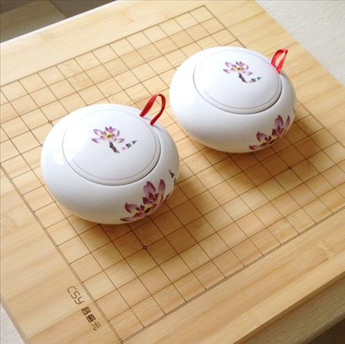
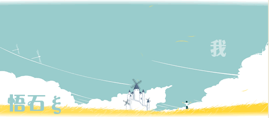
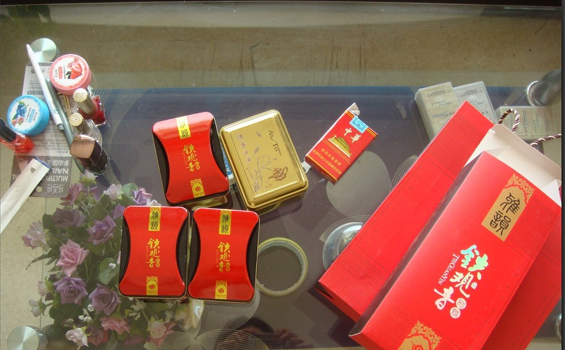
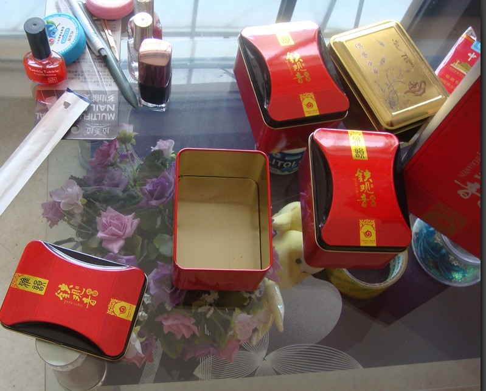

【原创】五子棋棋具选购指导
#1 【原创】五子棋棋具选购指导 作者：悟石 发表时间：2012-6-5 0:36:36
五子棋棋具，一直以来都受到轻视和忽略，因为一些历史原因，五子棋棋具受到围棋棋具的影响较大，甚至很多人到现在仍然觉得围棋棋具和五子棋棋具没什么不一样。几乎所有淘宝经销五子棋棋具的买家，都忽视了不少关于五子棋棋具很重要的一些因素，例如以 13 道围棋练习盘冒充五子棋棋盘，没有坐标的棋盘，格子超小的棋盘 ... 等等。其实为了对五子棋先行方优势的限制，早在 1966 年五子棋棋盘就已经被从原先的 19 × 19 道修改并规定为 15 × 15 道。我国五子棋竞赛规则里也明确对五子棋棋盘作了规定，明确要求五子棋棋盘需要有坐标。下面就本人所知的几种常见棋盘的知识提供给大家作为参考：

贴面棋盘：贴面棋盘是非常常见和大众化的棋盘，因为贴面棋盘对材质的要求比较低，一般采用高密度压缩板材，材料广泛价格就比较低廉，外面贴上木纹纸上印刷好的盘面，因为是印刷品木纹和色泽等因素可以控制，看起来就非常美观。较好的贴面棋盘里面可以用拼合的木材，外面的贴面纸上有覆膜，可以有一定的防水功效，经过重压不易变形、开裂、起皮。贴面棋盘因为是外贴纸的棋盘，档次不够高，如果是薄一点的棋盘还有可能因为风干等原因略微产生变形，导致棋盘整体凹凸，有可能在下棋时候棋盘不稳，容易转动，另外，该棋盘比较怕油渍、划痕、磨损、贴纸起泡等等，建议最好买回棋盘后另塑封一个塑料膜，不下棋的时候把棋盘放置与重物下保存。这种棋盘很适合初学者对棋盘和对材料要求不高的棋手。

实木棋敦：实木棋盘是档次比较高的棋盘，材质好的棋盘还具有一定的收藏价值，因为棋盘的木材已经越来越稀缺，现在用来做棋盘的木材有 红木 、 桦木 、 樟木 、 椴木 、 枫木 、红樱桃、榉木、槐木、 云杉 、 松木 、 铁杉 （新 榧木 ） 、 楸木 、 黄木、 榧木、榆木、竹木等等，日韩还有桂木、 桧木 、 公孙树 （ 银杏 ）系列等棋具。因为质地、纹理、色泽等原因其中较好的有：榧木（传说中近乎绝种的香榧，纹理美观，质地坚硬还略有香味）、新榧（一般就是杉木，云杉和铁杉较为常见，比较类似榧木的木纹，被冠名新榧，有欺骗嫌疑呵呵但现在都这么叫）、 楸木 和竹木。棋敦是没有腿的厚重的棋盘，这种棋盘因为其厚重，比较有质感和分量，下棋时不会因为棋盘轻薄变形滑动转动。而且这种实木棋盘可以选购刻线棋盘这样棋盘使用的寿命就大大增长，但是因为材质一般较少有棋盘那么大的材料，现在拼盘棋盘越来越多（特别是竹盘），现在的拼盘技术还不错，因此购买拼盘和实木棋敦只要厂家风干技术和黏合技术过关就可以购买。虽然如此保存此类棋盘时还是要注意避免变形，不要在极端环境下保存。棋敦的缺点在于棋敦因为和桌面接触的面积很大，材质又比较厚重坚硬，很容易给桌子或者棋敦下面造成划痕磕碰，不适宜搬动，且落子声音不够清脆。

棋敦棋桌：一般来说棋桌都比较具有收藏价值，棋桌可以理解为带腿的棋敦，一般常见于实木棋桌。因为有了腿棋盘更易于挪动，并且因为棋盘悬空，落子声音相对清脆。具体材质和注意事项都和实木棋敦类似，棋桌更需要注意的就是四个腿的高低，不要因为腿的高低不平影响棋盘的平稳。棋桌有高有低，一般也根据各人喜好以及放置棋桌的家具。比如日式棋桌一般来说都很高，因为日韩棋手下棋的坐姿喜欢跪坐，这样以来稍微高一点的棋桌可以直接放置在地上，更彰显气质品位，对棋手的视线上来说也很有利。但是棋盘毕竟是为棋手本人设计的，要人性化，因此，低脚的棋桌，因为其声音清脆，易于搬动，品位气质高雅，也是非常值得收藏的，但是下棋的时候一定要把棋桌放在适合的茶几上，所以购买棋桌一定要考虑适合自己家里放置棋桌的家具高度来选购棋桌。另外，棋桌因为其造型的别致，已经不仅是一个下棋的工具，可以成为一种陈列品、收藏品彰显主人身份和素养的象征，正因为这点现在越来越多的高端棋桌现世，比如在棋桌侧边雕花的棋桌，在棋桌四个腿上作造型的棋桌，盘面边框有特殊造型设计的棋桌、或者有茶几、收纳功能的棋桌等等。可以根据各人喜好和经济实力选择购买，棋桌应该是弈者最完美的棋盘。遗憾的是国内五子棋竞赛规则里对五子棋棋盘的要求是有坐标的，而有了字符对棋桌的收藏性是一个非常大的冲突。再看看围棋的棋桌，盘面和留边比例很完美， 19 路的盘面也很大气，好一点的围棋棋桌完全就是一件艺术品。

五子棋棋盘：五子棋因为盘面比较小，所以需要稍大一点的留边，同时也因为五子棋对线的要求比较高（五子连一“线”为胜）所以棋子和子棋之间应该略有空隙让棋手视线上比较容易观察，但也不宜过大（规定中尺寸为 2.5 × 2.4 厘米），这样一来棋盘相对也能大气一点，比较美观。最后，请注意五子棋的棋盘不同于围棋棋盘的另一个不引人注意的地方在于五子棋的星位只有四个，而围棋有八个。

棋子：五子棋的棋子和围棋基本是通用的，主要有塑料棋子、玻璃棋子、陶瓷棋子、云子、贝壳、宝石棋子等等。因为对弈的需求，个人认为选择陶瓷子和云子最为合适，因为其表面磨砂不反光不容易给弈者视觉上的不舒服。若因收藏等缘故则另当别论。下面主要谈谈五子棋棋子选购的要点：因为五子棋没有提子，落子之后不能挪动，为了稳定性的考虑，以及研棋时可以将单凸面棋子反过来区别使用，建议购买单凸面的棋子。另外，因为五子棋的盘面是 15 道，全盘一共 225 个交叉点，黑棋先行，所以黑棋有 113 个白棋有 112 个就够了，实战也很少有人下到满盘。最后，考虑到棋盘的因素，请根据棋盘格子尺寸选择棋子的大小号，最好不要发生棋子在棋盘上摆不下的悲剧。

棋罐：棋罐的材料一般为塑料盒、铁盒、木盒、瓷罐、漆盒、编制品等等，没有严格的规定，材料五花八门。棋罐的选购也需针对棋盘来进行配套选择购买，既然棋盘是木制的，那么棋罐一般来说最好也是木制的为上品，也有一说因棋子是陶瓷的玻璃的，瓷罐也不失为一种好的选择。五子棋棋罐因为棋子较少，可以使用围棋里小号棋罐代替。也期待有眼光的厂家能为五子棋专门生产棋罐。

［ 西北狼梦魂 于 2012-6-5 1:05:13 时奖励此帖[金币加 100 威望加1］
［ 西北狼梦魂 于 2012-6-5 1:09:48 时花20金币送鲜花一朵］
［ 西北狼梦魂 于 2012-6-5 1:10:06 时花20金币送鲜花一朵］
［ 西北狼梦魂 于 2012-6-5 1:10:17 时花20金币送鲜花一朵］
［此帖子已被 悟石 在 2012-6-5 1:14:30 编辑过］
［此帖子已被 悟石 在 2012-6-5 11:36:28 编辑过］
［ 冰雪笑醉 于 2012-6-5 12:06:13 时花20金币送鲜花一朵］
［ 冰雪笑醉 于 2012-6-5 12:06:15 时花20金币送鲜花一朵］
［ 冰雪笑醉 于 2012-6-5 12:06:16 时花20金币送鲜花一朵］
［ 冰雪笑醉 于 2012-6-5 12:18:08 时花20金币送鲜花一朵］
［ 吉小鼠 于 2012-6-5 18:25:37 时花20金币送鲜花一朵］
［ 吉小鼠 于 2012-6-5 18:25:39 时花20金币送鲜花一朵］
［ 吉小鼠 于 2012-6-5 18:25:42 时花20金币送鲜花一朵］
#2 Re:【原创】五子棋棋具选购指南 作者：西北狼梦魂 发表时间：2012-6-5 0:53:50
坐个沙发
#3 Re:【原创】五子棋棋具选购指导 作者：冰雪笑醉 发表时间：2012-6-5 12:07:18
第一图的棋盒很像我的茶叶盒子，拍个照片来给你看下哈。。#4 Re:悟石【==【原创】五子棋棋具选购指导==】 作者：冰雪笑醉 发表时间：2012-6-5 12:16:20


 好看不
好看不
［ 悟石 于 2012-6-5 16:09:40 时花20金币送鲜花一朵］
#5 Re:冰雪笑醉【==Re:【原创】五子棋棋具选购指导==】 作者：悟石 发表时间：2012-6-5 12:18:18
引用：
原文由 冰雪笑醉 发表于 2012-6-5 12:07:18 :
第一图的棋盒很像我的茶叶盒子，拍个照片来给你看下哈。。
好眼力！
其实这种叫马蹄罐，是经常用来装茶叶所以觉得像茶叶罐，有点先入为主的味道了。
这种铁罐用来装的东西很多，不局限在茶罐，而且茶罐的壁厚都比较薄，轻轻一捏都会变形，我订制的这种是壁厚较厚的，大概3丝的铁皮不易变形。大小也正合适装五子棋，总比草罐和塑料盒好很多了：）
［此帖子已被 悟石 在 2012-6-5 12:20:08 编辑过］
#6 Re:【原创】五子棋棋具选购指导 作者：冰雪笑醉 发表时间：2012-6-5 12:20:32
 第2图的我喜欢！
第2图的我喜欢！
#7 Re:【原创】五子棋棋具选购指导 作者：萧翎 发表时间：2012-6-5 13:19:10
在悟石那里买过一个盘，很不错。
［ 悟石 于 2012-6-5 16:11:34 时花20金币送鲜花一朵］
#8 Re:冰雪笑醉【==Re:【原创】五子棋棋具选购指导==】 作者：悟石 发表时间：2012-6-5 16:07:57
引用：
原文由 冰雪笑醉 发表于 2012-6-5 12:20:32 :
有机会来西安玩,面谈
#9 Re:萧翎【==Re:【原创】五子棋棋具选购指导==】 作者：悟石 发表时间：2012-6-5 16:09:09
引用：谢谢白兄的光顾和各种好建议.
原文由 萧翎 发表于 2012-6-5 13:19:10 :在悟石那里买过一个盘，很不错。
#10 Re:【原创】五子棋棋具选购指导 作者：吉小鼠 发表时间：2012-6-5 18:21:10
我们学校棋社也都是在悟石这买的五子棋盘~~ 赞一个~~~ ［ 悟石 于 2012-6-5 22:14:16 时花20金币送鲜花一朵］
#11 Re:吉小鼠【==Re:【原创】五子棋棋具选购指导==】 作者：悟石 发表时间：2012-6-5 22:13:53
引用：
原文由 吉小鼠 发表于 2012-6-5 18:21:10 :谢谢各位力挺！